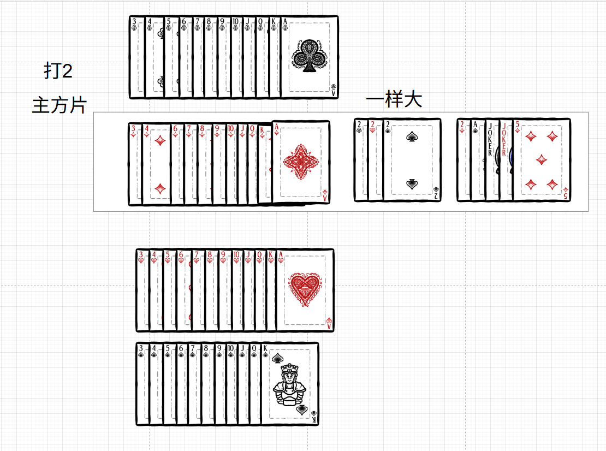
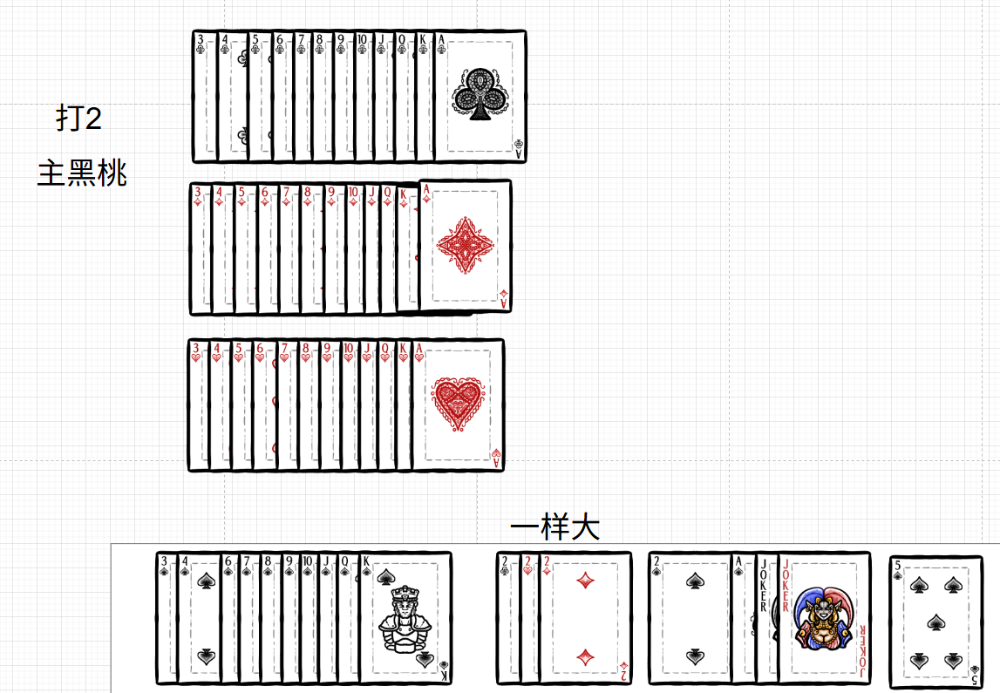
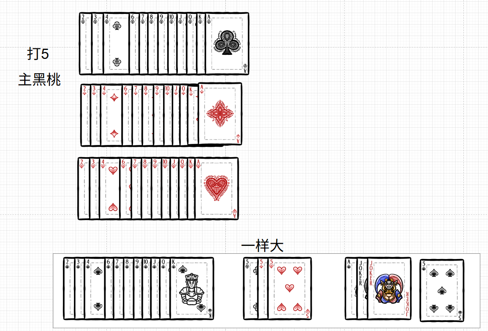

一、基础信息
- 牌：两副扑克（108 张），每人 25 张，底牌 8 张。
- 人：4 人，对家一队（座位交叉）。
- 分：5（5 分）、10（10 分）、K（10 分），总共 200 分。
- 目标：守分或抢分，先打过 A 的一方获胜。
二、什么是主牌？
- 常主（固定主牌）：大王、小王、黑桃 A，永远是主牌。
- 级牌（机动主牌）：当前打几，四个花色的这几张牌就是级牌。
升级顺序：2 → 5 → 10 → J → Q → K → A → 2（循环）
必打级牌：2、J、A 不能跳过。
- 主牌花色：亮主时确定的那个花色，该花色的所有牌也都是主牌。
一句话：主牌 = 常主 + 级牌（四花色） + 主牌花色的所有牌。
三、牌力大小顺序（最重要！）
1. 主牌大小顺序（以打 2、方块为主为例）
| 顺序 |
牌 |
说明 |
| 1（最大） |
方块 5 |
中心 5，整局最大 |
| 2 |
大王 |
|
| 3 |
小王 |
|
| 4 |
黑桃 A |
|
| 5 |
方块 2 |
主牌花色的级牌 |
| 6 |
黑桃 2、红桃 2、梅花 2 |
其他花色的级牌，这三张一样大 |
| 7 |
方块 K |
|
| 8 |
方块 Q |
|
| 9 |
方块 J |
|
| 10 |
方块 10 |
|
| 11 |
方块 9 |
|
| 12 |
方块 8 |
|
| 13 |
方块 7 |
|
| 14 |
方块 6 |
|
| 15 |
方块 4 |
|
| 16 |
方块 3 |
最小 |
记住：中心 5（亮主花色的 5） > 大王 > 小王 > 黑桃 A > 主级牌 > 其他级牌 > 主花色 A…K…3
2. 副牌大小顺序（所有非主牌花色）
完整顺序：A > K > Q > J > 10 > 9 > 8 > 7 > 6 > 5 > 4 > 3 > 2
说明：副牌中不包含当前级牌（因为级牌已归入主牌），但 5、10、K 作为分牌正常存在。
例：打 2 时，副牌中没有 2；打 5 时，副牌中没有 5，此时 5 全变为主牌但仍带 5 分。
四、亮主与庄家
- 亮主：摸牌时亮出一张当前级牌，你成为庄家，该花色为主牌。
- 定主：亮出一对级牌，直接定死花色，别人不能再反花色。
- 反主：定主前，别人亮出另一对级牌，可以反主，新花色成为主牌。
- 无人亮主：需要翻看底牌，由当前先摸牌的人，指定“遇大”或“遇小”（即翻开底牌决定主牌花色）。
五、出牌规则
- 必须跟花色：别人出什么花色，你也要出这个花色。
- 没有该花色：
- 垫牌：随便出，不参与竞争。
- 毙牌：出主牌，必须牌型完全一样（对方出单张，你也要出单张主牌；对方出对子，你也要出对子主牌）。
- 牌不够：没有对子/没有连对，有多少出多少，剩下的用其他牌垫。这种情况属于垫牌，不参与比较。
六、拖拉机（连对）
- 定义：花色相同、点数相连的至少两对牌。
- 主牌拖拉机：可以跨类别，只要在主牌顺序中相邻。
例（打 2 方块主）：方块 5+方块 5 + 大王+大王 构成拖拉机。
- 副牌拖拉机：按副牌顺序（A-K-Q-…-2）相连即可，除去当前级牌。
例（打 10 方块主）：梅花 99+梅花 JJ 属于连对（因为 10 不在副牌中，9 和 J 相邻）。
七、甩牌
- 条件：你确信手上的这几张牌，在当前花色中都是最大的，可以一次性全甩出去。
- 失败：如果判断错误，甩出的牌中有不是最大的，必须打出其中最小的一张，其余收回，罚 5 分给对方。
八、计分与抠底
1. 得分
- 每轮谁牌最大，谁拿走这一轮的所有分牌（5/10/K）。
- 庄家方赢的分作废，闲家赢的分累计。
2. 抠底（最后一轮）
- 如果最后一轮闲家牌最大，就翻开底牌，底牌里的分翻倍后加给闲家。
- 翻倍规则：最后一轮闲家出几张牌，底牌分就翻几倍（1 张不翻倍，2 张×2，4 张×4，依此类推）。
九、升级与胜负
| 闲家得分 |
结果 |
| 0 分 |
庄家方升 3 级（大光） |
| 1 ~ 39 分 |
庄家方升 2 级（小光） |
| 40 ~ 79 分 |
庄家方升 1 级 |
| 80 分 |
强庄（庄家继续坐庄，级牌不变） |
| 81 ~ 119 分 |
闲家上台（庄家下台），级牌不变 |
| 120 ~ 159 分 |
闲家上台，且闲家升 2 级 |
| 160 ~ 200 分 |
闲家上台，且闲家升 3 级 |
轮庄
- 庄家升级或强庄 → 下一局由对家坐庄。
- 闲家上台 → 下一局由下家坐庄。
十、J 和 A 的特殊降级（过沟、戴帽）
打 J 时
- 如果闲家得分 大于 80 分，且最后一轮用 J 抠底，则庄家方直接 降级到 2 并下庄。
- 如果闲家得分 小于 80 分，且最后一轮用 J 抠底，则庄家方按照正常得分升级（即根据闲家得分按升级表处理）。
- 其他情况（未用 J 抠底或得分等于 80 分），按正常升级规则进行。
打 A 时
- 如果闲家得分 大于 80 分，且最后一轮用 A 抠底，则庄家方直接 降级到 J 并下庄。
- 如果闲家得分 小于 80 分，且最后一轮用 A 抠底，则庄家方 直接赢得比赛（打过 A）。
- 其他情况（未用 A 抠底或得分等于 80 分），按正常升级规则进行。
附录：牌级参考
被框起来的是主牌


